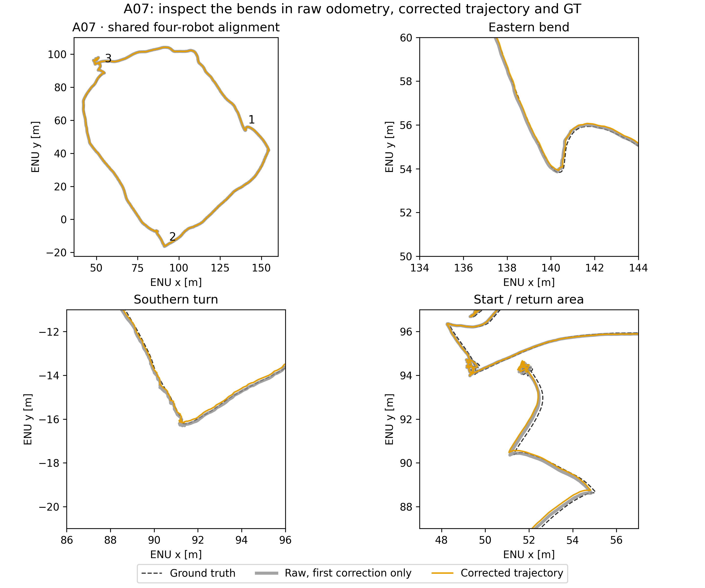
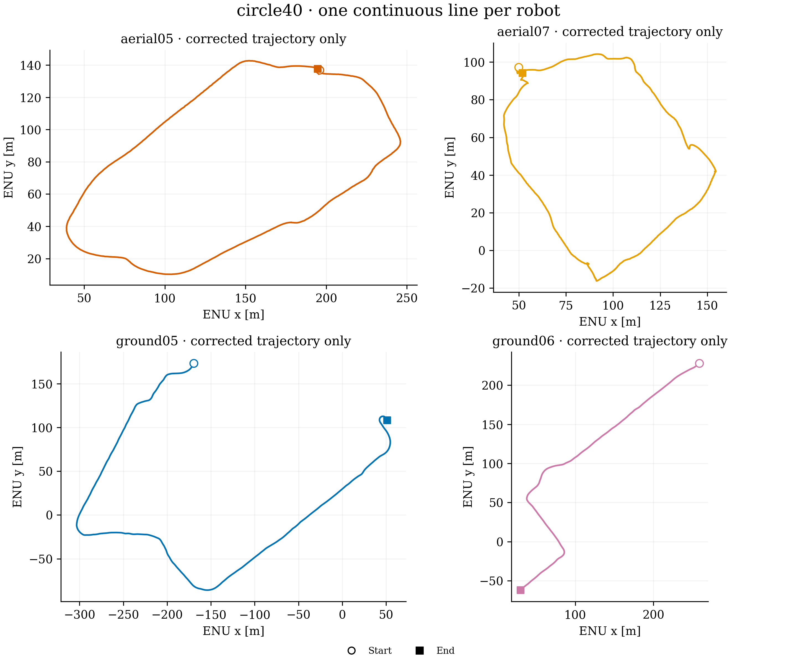
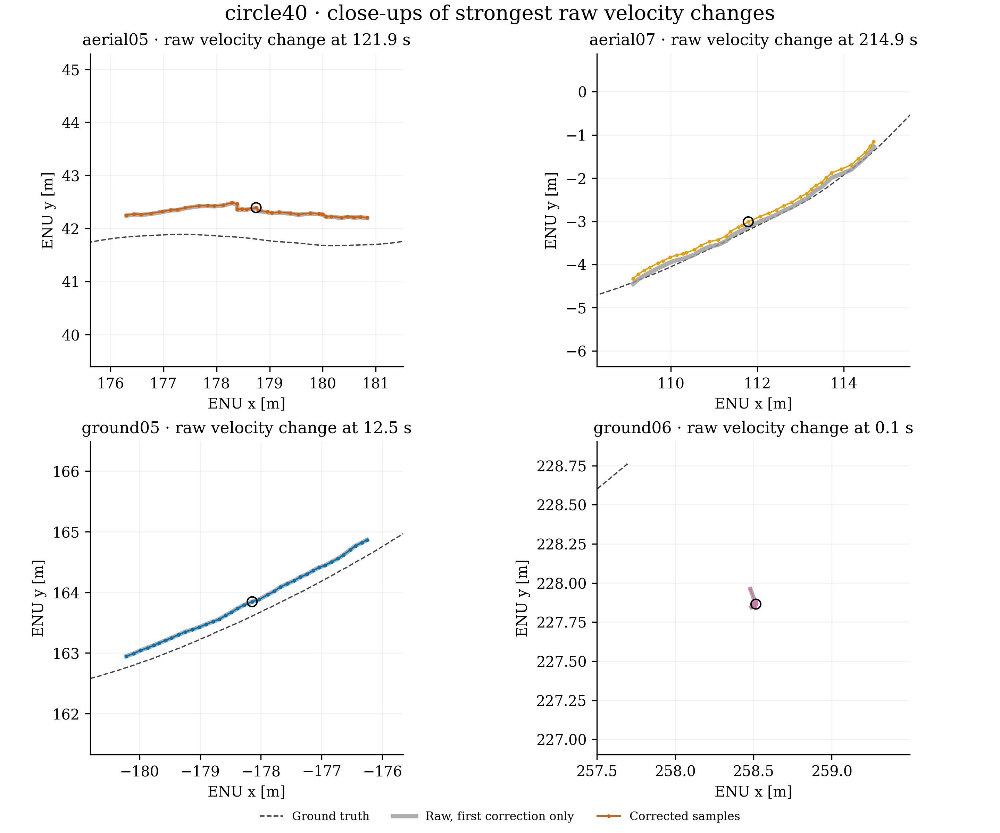
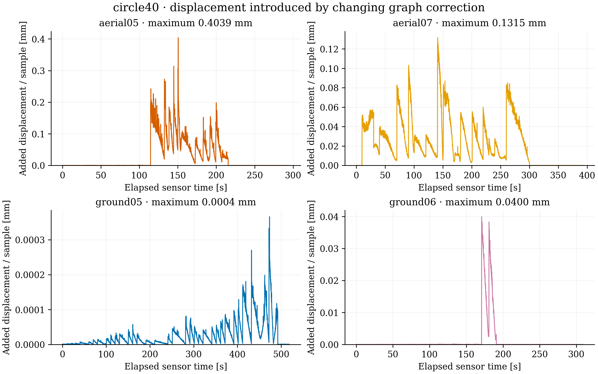
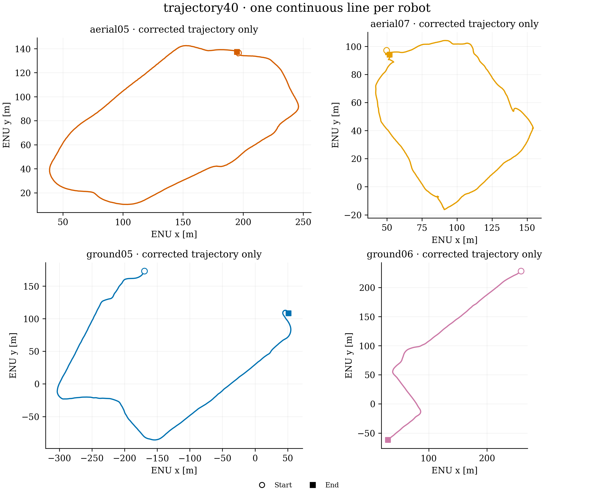
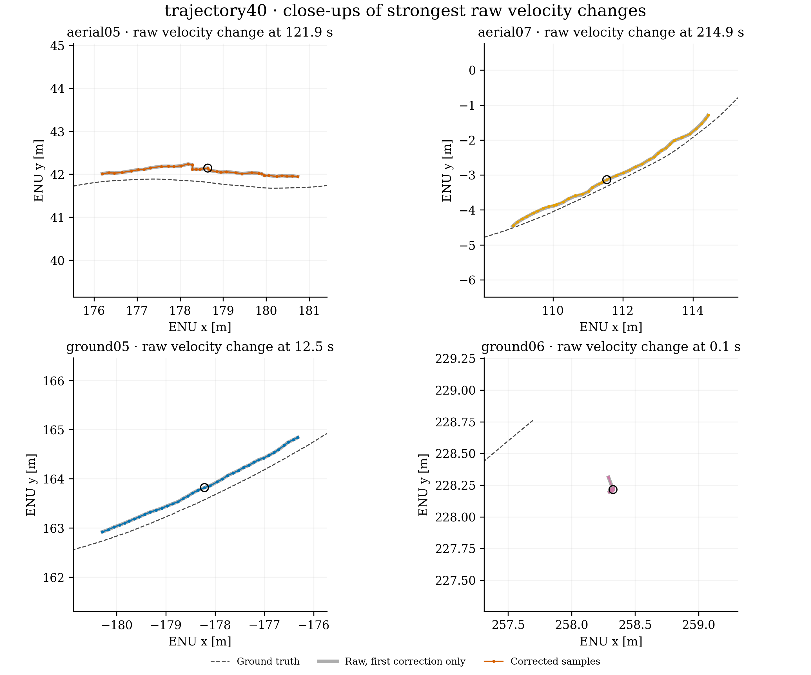
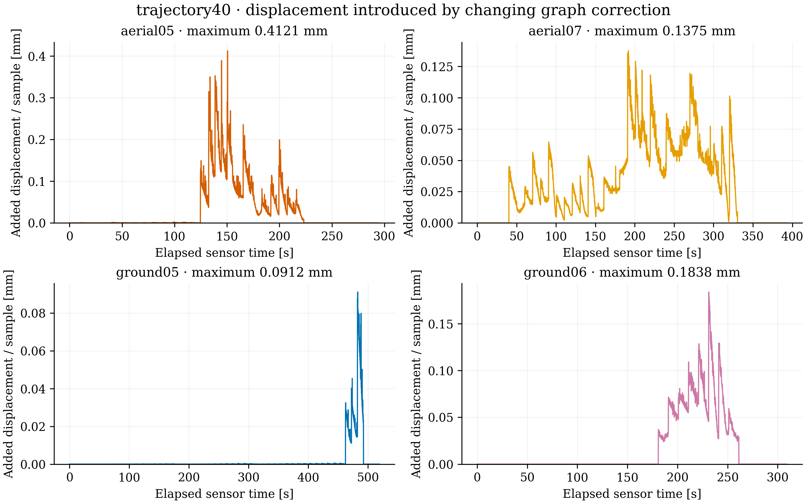
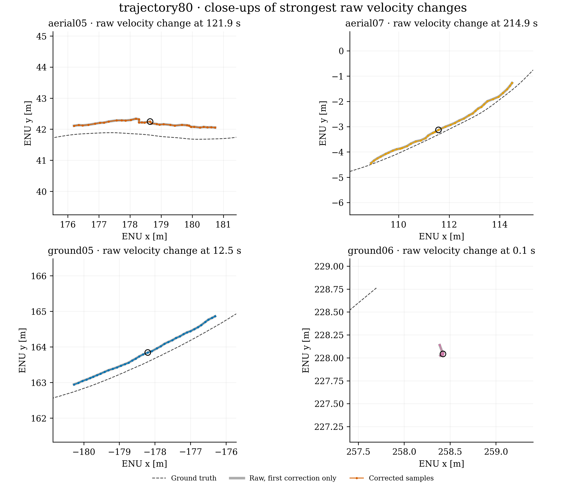
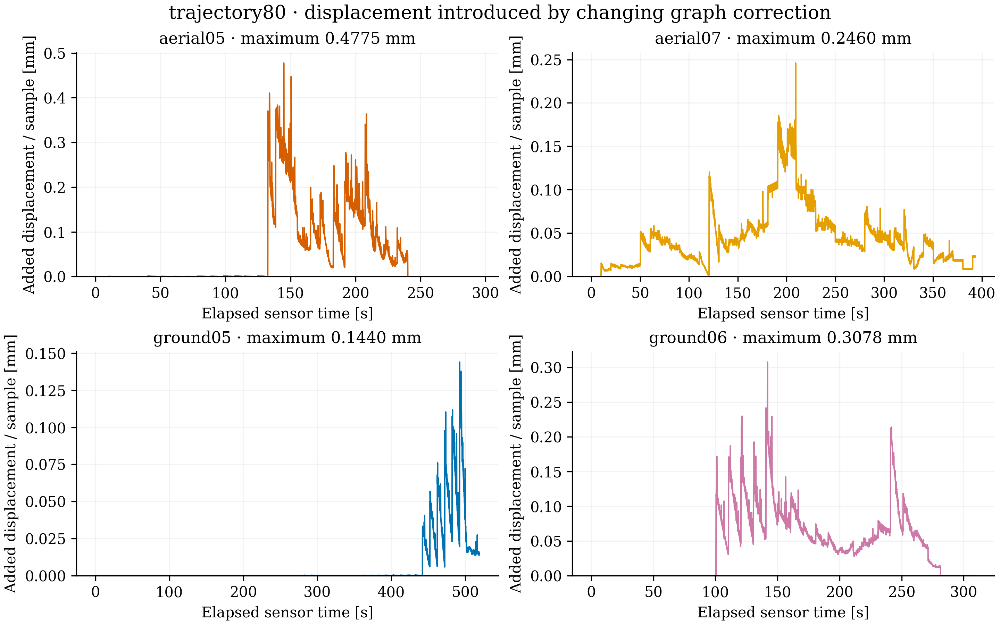

The saved dense trajectories retain the raw sample timestamps. To isolate graph propagation, each raw step is rotated by the previous correction and subtracted from the corrected step. A fixed rigid alignment therefore contributes zero. Across these runs the maximum additional displacement is below 0.5 mm per sample. There is no evidence here of macroscopic jumps introduced by trajectory correction. This audit does not establish that the trajectory or spatial map deformation is accurate.
Trajectory-only panels omit map points and ground truth to make each line unambiguous. Close-ups show the largest raw velocity change, selected without ground truth; gray is raw odometry transformed by the first correction only, colored dots are the actual corrected samples, and dashed black is ground truth. No smoothing, sample removal or trajectory replacement is applied. ATE and graph solutions are unchanged.
Numeric tables and method · Measurements and hashes
The eastern and southern bends also occur in raw odometry and ground truth. Gray: raw trajectory with the first correction; orange: corrected samples; dashed black: ground truth.








